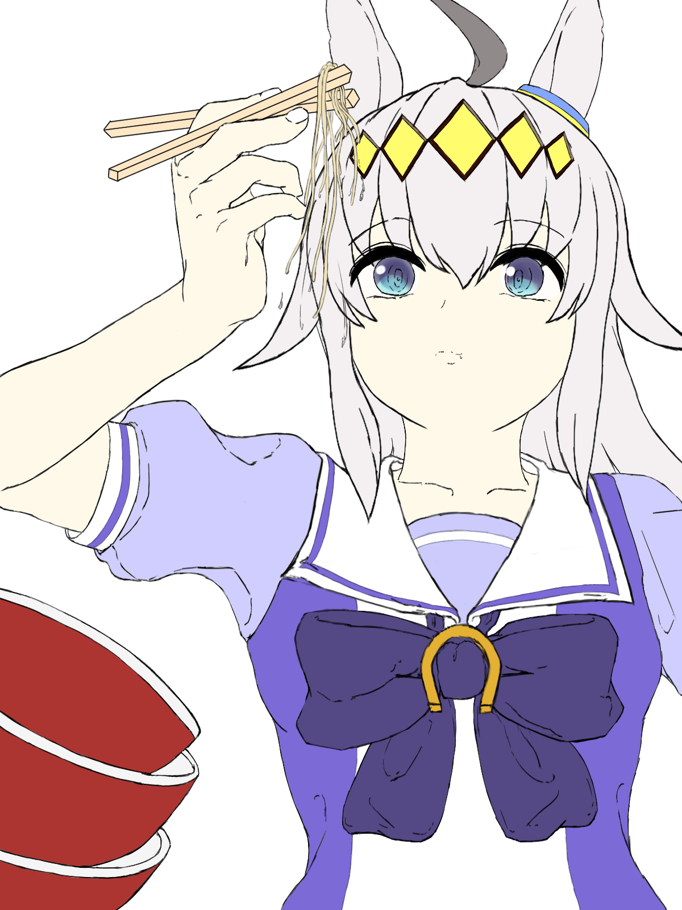

個人的好きなキャラNo.3-篁唯依-
譜代武家「篁家」現在当主。数年前、衛士訓練学校で寝食を共にした級友とともに、戦火に今まさに燃え尽きようとする帝都京都で防衛戦に参加。訓練兵の手腕では人類の宿敵BETAに叶うはずもなく、親友を目の前で惨殺され、「撃ってよ、唯依」……、最期の望みを弱さ所以に聞き入れることもできずただ震えるばかりでいた。心身を蝕むトラウマを抱える。
あの惨劇から幾数年、戦術機を駆り戦場で躍進を重ね、中尉にまで階級を上げるなど譜代武家として殿下に恥じない振る舞いを続ける。しかし、今だ心の傷は癒えないでいる。それでも、篁家当主として、父に恥じない人間になるため、己の一振りを磨き続けていた。そんな時、突然国連軍開発チームへの出向を命じられる。それは、事実的な前線からの追放でもあった。ユウヤ・ブリッジスからつけられた呼称は「ジャパニーズドール」。
オグリキャップWIP

現在鋭意製作中!